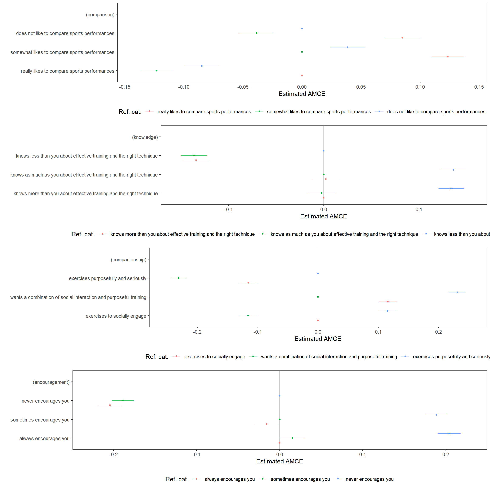

To copy the code, click the button in the upper right corner of the code-chunks.
rm(list=ls())
gc()fpackage.check: Check if packages are installed (and
install if not) in Rfsave: Function to save data with time stamp in
/correct directoryfload: Function to load R-objects under new namesftablefpackage.check <- function(packages) {
lapply(packages, FUN = function(x) {
if (!require(x, character.only = TRUE)) {
install.packages(x, dependencies = TRUE)
library(x, character.only = TRUE)
}
})
}
fsave <- function(x, file, location = "./data/processed/", ...) {
if (!dir.exists(location))
dir.create(location)
datename <- substr(gsub("[:-]", "", Sys.time()), 1, 8)
totalname <- paste(location, datename, file, sep = "")
print(paste("SAVED: ", totalname, sep = ""))
save(x, file = totalname)
}
fload <- function(fileName){
load(fileName)
get(ls()[ls() != "fileName"])
}
ftable <- function(x, caption=NULL) {
knitr::kable(x, digits=2, "html", caption=caption) %>%
kableExtra::kable_styling(bootstrap_options = c("striped", "hover")) %>%
kableExtra::scroll_box(height="300px")
}tidyverse: data wranglingcreggpackages = c("tidyverse", "cregg")
fpackage.check(packages)Load in data-set, created here.
You may also obtain it by downloading: xfun::embedd
today <- gsub("-", "", Sys.Date())
data <- fload(paste0("./data/processed/", today, "conjoint.Rda"))The descriptive marginal means (MMs) illustrate the average outcome for a specific level of a conjoint feature, taking into account all occurrences and averaging across other features. In our study, participants were presented with three alternatives in each choice set, resulting in MMs that average at 0.33. Values above 0.33 indicate features that enhance the attractiveness of alternatives, while values below 0.33 indicate features that reduce the attractiveness of alternatives.
f1 <- choice ~ comparison + knowledge + companionship + encouragement
plot(cregg::mm(data, f1, id=~id), vline=1/3)Average marginal component effects (AMCEs).
amces <- cregg::cj(data, f1, id = ~id)
ftable(amces[c("feature", "level", "estimate", "std.error")])| feature | level | estimate | std.error |
|---|---|---|---|
| comparison | really likes to compare sports performances | 0.00 | NA |
| comparison | somewhat likes to compare sports performances | 0.12 | 0.01 |
| comparison | does not like to compare sports performances | 0.08 | 0.01 |
| knowledge | knows more than you about effective training and the right technique | 0.00 | NA |
| knowledge | knows as much as you about effective training and the right technique | 0.00 | 0.01 |
| knowledge | knows less than you about effective training and the right technique | -0.13 | 0.01 |
| companionship | exercises to socially engage | 0.00 | NA |
| companionship | wants a combination of social interaction and purposeful training | 0.12 | 0.01 |
| companionship | exercises purposefully and seriously | -0.11 | 0.01 |
| encouragement | always encourages you | 0.00 | NA |
| encouragement | sometimes encourages you | -0.02 | 0.01 |
| encouragement | never encourages you | -0.21 | 0.01 |
plot(amces)amce_diagnostic1 <- cregg::amce_by_reference(data, choice ~ comparison, ~comparison, id = ~id)
amce_diagnostic2 <- cregg::amce_by_reference(data, choice ~ knowledge, ~knowledge, id = ~id)
amce_diagnostic3 <- cregg::amce_by_reference(data, choice ~ companionship, ~companionship, id = ~id)
amce_diagnostic4 <- cregg::amce_by_reference(data, choice ~ encouragement, ~encouragement, id = ~id)
plot1 <- plot(amce_diagnostic1, group = "REFERENCE", legend_title = "Ref. cat.")
plot2 <- plot(amce_diagnostic2, group = "REFERENCE", legend_title = "Ref. cat.")
plot3 <- plot(amce_diagnostic3, group = "REFERENCE", legend_title = "Ref. cat.")
plot4 <- plot(amce_diagnostic4, group = "REFERENCE", legend_title = "Ref. cat.")
multiplot <- gridExtra::grid.arrange(plot1,plot2,plot3,plot4,ncol=1)
Let’s ensure that there are no substantial variations in preferences within-respondents across multiple conjoint choice-tasks:
mm_byset <- cregg::cj(data, f1, id = ~id, estimate = "mm", by = ~set)
plot(mm_byset, group = "set", vline = 1/3)A nested model comparison test:
cregg::cj_anova(data, f1, by = ~set)#> Analysis of Deviance Table
#>
#> Model 1: choice ~ comparison + knowledge + companionship + encouragement
#> Model 2: choice ~ comparison + knowledge + companionship + encouragement +
#> set + comparison:set + knowledge:set + companionship:set +
#> encouragement:set
#> Resid. Df Resid. Dev Df Deviance F Pr(>F)
#> 1 28845 5717.6
#> 2 28827 5711.9 18 5.7474 1.6115 0.04838 *
#> ---
#> Signif. codes: 0 '***' 0.001 '**' 0.01 '*' 0.05 '.' 0.1 ' ' 1data$Sex <- NA_real_
data$Sex[data$gender == "man"] <- 1L
data$Sex[data$gender == "woman"] <- 2L
data$Sex <- factor(data$Sex, 1:2, c("Male", "Female"))
x <- cregg::cj(na.omit(data), f1, id = ~id, estimate = "mm", by = ~Sex)
plot(x, group = "Sex", vline=1/3)amces <- cregg::cj(na.omit(data), f1, id = ~id, estimate = "amce", by = ~Sex)
diff_amces <- cregg::cj(na.omit(data), f1, id = ~id, estimate = "amce_diff", by = ~Sex)
ftable(amces)| BY | outcome | statistic | feature | level | estimate | std.error | z | p | lower | upper | Sex |
|---|---|---|---|---|---|---|---|---|---|---|---|
| Male | choice | amce | comparison | really likes to compare sports performances | 0.00 | NA | NA | NA | NA | NA | Male |
| Male | choice | amce | comparison | somewhat likes to compare sports performances | 0.08 | 0.01 | 5.91 | 0.00 | 0.06 | 0.11 | Male |
| Male | choice | amce | comparison | does not like to compare sports performances | -0.02 | 0.02 | -1.13 | 0.26 | -0.05 | 0.01 | Male |
| Male | choice | amce | knowledge | knows more than you about effective training and the right technique | 0.00 | NA | NA | NA | NA | NA | Male |
| Male | choice | amce | knowledge | knows as much as you about effective training and the right technique | 0.01 | 0.01 | 0.52 | 0.61 | -0.02 | 0.04 | Male |
| Male | choice | amce | knowledge | knows less than you about effective training and the right technique | -0.13 | 0.01 | -9.00 | 0.00 | -0.16 | -0.10 | Male |
| Male | choice | amce | companionship | exercises to socially engage | 0.00 | NA | NA | NA | NA | NA | Male |
| Male | choice | amce | companionship | wants a combination of social interaction and purposeful training | 0.16 | 0.02 | 10.34 | 0.00 | 0.13 | 0.19 | Male |
| Male | choice | amce | companionship | exercises purposefully and seriously | -0.05 | 0.02 | -2.99 | 0.00 | -0.08 | -0.02 | Male |
| Male | choice | amce | encouragement | always encourages you | 0.00 | NA | NA | NA | NA | NA | Male |
| Male | choice | amce | encouragement | sometimes encourages you | -0.03 | 0.01 | -1.98 | 0.05 | -0.06 | 0.00 | Male |
| Male | choice | amce | encouragement | never encourages you | -0.22 | 0.01 | -15.30 | 0.00 | -0.24 | -0.19 | Male |
| Female | choice | amce | comparison | really likes to compare sports performances | 0.00 | NA | NA | NA | NA | NA | Female |
| Female | choice | amce | comparison | somewhat likes to compare sports performances | 0.14 | 0.01 | 14.40 | 0.00 | 0.12 | 0.16 | Female |
| Female | choice | amce | comparison | does not like to compare sports performances | 0.11 | 0.01 | 9.78 | 0.00 | 0.09 | 0.13 | Female |
| Female | choice | amce | knowledge | knows more than you about effective training and the right technique | 0.00 | NA | NA | NA | NA | NA | Female |
| Female | choice | amce | knowledge | knows as much as you about effective training and the right technique | -0.01 | 0.01 | -0.86 | 0.39 | -0.03 | 0.01 | Female |
| Female | choice | amce | knowledge | knows less than you about effective training and the right technique | -0.14 | 0.01 | -13.45 | 0.00 | -0.16 | -0.12 | Female |
| Female | choice | amce | companionship | exercises to socially engage | 0.00 | NA | NA | NA | NA | NA | Female |
| Female | choice | amce | companionship | wants a combination of social interaction and purposeful training | 0.16 | 0.01 | 14.17 | 0.00 | 0.14 | 0.18 | Female |
| Female | choice | amce | companionship | exercises purposefully and seriously | -0.08 | 0.01 | -7.00 | 0.00 | -0.10 | -0.06 | Female |
| Female | choice | amce | encouragement | always encourages you | 0.00 | NA | NA | NA | NA | NA | Female |
| Female | choice | amce | encouragement | sometimes encourages you | -0.02 | 0.01 | -1.87 | 0.06 | -0.04 | 0.00 | Female |
| Female | choice | amce | encouragement | never encourages you | -0.23 | 0.01 | -22.56 | 0.00 | -0.26 | -0.21 | Female |
ftable(diff_amces)| BY | outcome | statistic | feature | level | Sex | estimate | std.error | z | p | lower | upper |
|---|---|---|---|---|---|---|---|---|---|---|---|
| Female - Male | choice | amce_difference | companionship | exercises purposefully and seriously | Female | -0.03 | 0.02 | -1.53 | 0.13 | -0.07 | 0.01 |
| Female - Male | choice | amce_difference | companionship | wants a combination of social interaction and purposeful training | Female | 0.00 | 0.02 | -0.14 | 0.89 | -0.04 | 0.03 |
| Female - Male | choice | amce_difference | comparison | does not like to compare sports performances | Female | 0.12 | 0.02 | 6.63 | 0.00 | 0.09 | 0.16 |
| Female - Male | choice | amce_difference | comparison | somewhat likes to compare sports performances | Female | 0.06 | 0.02 | 3.19 | 0.00 | 0.02 | 0.09 |
| Female - Male | choice | amce_difference | encouragement | never encourages you | Female | -0.02 | 0.02 | -1.11 | 0.27 | -0.05 | 0.01 |
| Female - Male | choice | amce_difference | encouragement | sometimes encourages you | Female | 0.01 | 0.02 | 0.42 | 0.67 | -0.03 | 0.04 |
| Female - Male | choice | amce_difference | knowledge | knows as much as you about effective training and the right technique | Female | -0.02 | 0.02 | -0.92 | 0.36 | -0.05 | 0.02 |
| Female - Male | choice | amce_difference | knowledge | knows less than you about effective training and the right technique | Female | -0.01 | 0.02 | -0.68 | 0.50 | -0.05 | 0.02 |
plot(rbind(amces, diff_amces)) + ggplot2::facet_wrap(~BY, ncol = 3L)data$Active <- NA_real_
data$Active[data$activeW2 == "yes"] <- 2L
data$Active[data$activeW2 == "no"] <- 1L
data$Active <- factor(data$Active, 1:2, c("No", "Yes"))
x <- cregg::cj(data, f1, id = ~id, estimate = "mm", by = ~Active)
plot(x, group = "Active", vline=1/3)amces <- cregg::cj(data, f1, id = ~id, estimate = "amce", by = ~Active)
diff_amces <- cregg::cj(data, f1, id = ~id, estimate = "amce_diff", by = ~Active)
ftable(amces)| BY | outcome | statistic | feature | level | estimate | std.error | z | p | lower | upper | Active |
|---|---|---|---|---|---|---|---|---|---|---|---|
| No | choice | amce | comparison | really likes to compare sports performances | 0.00 | NA | NA | NA | NA | NA | No |
| No | choice | amce | comparison | somewhat likes to compare sports performances | 0.13 | 0.01 | 11.15 | 0.00 | 0.10 | 0.15 | No |
| No | choice | amce | comparison | does not like to compare sports performances | 0.12 | 0.01 | 9.85 | 0.00 | 0.09 | 0.14 | No |
| No | choice | amce | knowledge | knows more than you about effective training and the right technique | 0.00 | NA | NA | NA | NA | NA | No |
| No | choice | amce | knowledge | knows as much as you about effective training and the right technique | 0.01 | 0.01 | 1.08 | 0.28 | -0.01 | 0.03 | No |
| No | choice | amce | knowledge | knows less than you about effective training and the right technique | -0.12 | 0.01 | -10.99 | 0.00 | -0.14 | -0.10 | No |
| No | choice | amce | companionship | exercises to socially engage | 0.00 | NA | NA | NA | NA | NA | No |
| No | choice | amce | companionship | wants a combination of social interaction and purposeful training | 0.04 | 0.01 | 3.15 | 0.00 | 0.01 | 0.06 | No |
| No | choice | amce | companionship | exercises purposefully and seriously | -0.20 | 0.01 | -16.47 | 0.00 | -0.22 | -0.17 | No |
| No | choice | amce | encouragement | always encourages you | 0.00 | NA | NA | NA | NA | NA | No |
| No | choice | amce | encouragement | sometimes encourages you | -0.01 | 0.01 | -0.93 | 0.35 | -0.03 | 0.01 | No |
| No | choice | amce | encouragement | never encourages you | -0.17 | 0.01 | -13.91 | 0.00 | -0.19 | -0.14 | No |
| Yes | choice | amce | comparison | really likes to compare sports performances | 0.00 | NA | NA | NA | NA | NA | Yes |
| Yes | choice | amce | comparison | somewhat likes to compare sports performances | 0.12 | 0.01 | 14.85 | 0.00 | 0.10 | 0.14 | Yes |
| Yes | choice | amce | comparison | does not like to compare sports performances | 0.06 | 0.01 | 7.04 | 0.00 | 0.05 | 0.08 | Yes |
| Yes | choice | amce | knowledge | knows more than you about effective training and the right technique | 0.00 | NA | NA | NA | NA | NA | Yes |
| Yes | choice | amce | knowledge | knows as much as you about effective training and the right technique | 0.00 | 0.01 | -0.27 | 0.79 | -0.02 | 0.01 | Yes |
| Yes | choice | amce | knowledge | knows less than you about effective training and the right technique | -0.13 | 0.01 | -16.01 | 0.00 | -0.15 | -0.12 | Yes |
| Yes | choice | amce | companionship | exercises to socially engage | 0.00 | NA | NA | NA | NA | NA | Yes |
| Yes | choice | amce | companionship | wants a combination of social interaction and purposeful training | 0.16 | 0.01 | 17.57 | 0.00 | 0.14 | 0.18 | Yes |
| Yes | choice | amce | companionship | exercises purposefully and seriously | -0.07 | 0.01 | -7.37 | 0.00 | -0.08 | -0.05 | Yes |
| Yes | choice | amce | encouragement | always encourages you | 0.00 | NA | NA | NA | NA | NA | Yes |
| Yes | choice | amce | encouragement | sometimes encourages you | -0.02 | 0.01 | -2.71 | 0.01 | -0.04 | -0.01 | Yes |
| Yes | choice | amce | encouragement | never encourages you | -0.23 | 0.01 | -27.27 | 0.00 | -0.24 | -0.21 | Yes |
ftable(diff_amces)| BY | outcome | statistic | feature | level | Active | estimate | std.error | z | p | lower | upper |
|---|---|---|---|---|---|---|---|---|---|---|---|
| Yes - No | choice | amce_difference | companionship | exercises purposefully and seriously | Yes | 0.13 | 0.02 | 8.75 | 0.00 | 0.10 | 0.16 |
| Yes - No | choice | amce_difference | companionship | wants a combination of social interaction and purposeful training | Yes | 0.12 | 0.02 | 7.72 | 0.00 | 0.09 | 0.15 |
| Yes - No | choice | amce_difference | comparison | does not like to compare sports performances | Yes | -0.06 | 0.01 | -3.67 | 0.00 | -0.08 | -0.03 |
| Yes - No | choice | amce_difference | comparison | somewhat likes to compare sports performances | Yes | 0.00 | 0.01 | -0.33 | 0.74 | -0.03 | 0.02 |
| Yes - No | choice | amce_difference | encouragement | never encourages you | Yes | -0.06 | 0.01 | -4.21 | 0.00 | -0.09 | -0.03 |
| Yes - No | choice | amce_difference | encouragement | sometimes encourages you | Yes | -0.01 | 0.01 | -0.86 | 0.39 | -0.04 | 0.02 |
| Yes - No | choice | amce_difference | knowledge | knows as much as you about effective training and the right technique | Yes | -0.01 | 0.01 | -1.02 | 0.31 | -0.04 | 0.01 |
| Yes - No | choice | amce_difference | knowledge | knows less than you about effective training and the right technique | Yes | -0.01 | 0.01 | -0.96 | 0.34 | -0.04 | 0.01 |
plot(rbind(amces, diff_amces)) + ggplot2::facet_wrap(~BY, ncol = 3L)data$Frequency <- NA_real_
hist(as.numeric(data$sportsfreq,na.rm=TRUE))ftable(psych::describe(data$sportsfreq,na.rm=TRUE), caption= "Running frequency statistics")| vars | n | mean | sd | median | trimmed | mad | min | max | range | skew | kurtosis | se | |
|---|---|---|---|---|---|---|---|---|---|---|---|---|---|
| X1 | 1 | 18603 | 2.94 | 2.08 | 2 | 2.68 | 1.48 | 0.5 | 14 | 13.5 | 1.43 | 2.74 | 0.02 |
data$Frequency[data$sportsfreq < 3] <- 1L
data$Frequency[data$sportsfreq >= 3] <- 2L
data$Frequency <- factor(data$Frequency, 1:2, c("Low frequency", "High frequency"))
x <- cregg::cj(na.omit(data), f1, id = ~id, estimate = "mm", by = ~Frequency)
plot(x, group = "Frequency", vline=1/3)amces <- cregg::cj(na.omit(data), f1, id = ~id, estimate = "amce", by = ~Frequency)
diff_amces <- cregg::cj(na.omit(data), f1, id = ~id, estimate = "amce_diff", by = ~Frequency)
ftable(amces)| BY | outcome | statistic | feature | level | estimate | std.error | z | p | lower | upper | Frequency |
|---|---|---|---|---|---|---|---|---|---|---|---|
| Low frequency | choice | amce | comparison | really likes to compare sports performances | 0.00 | NA | NA | NA | NA | NA | Low frequency |
| Low frequency | choice | amce | comparison | somewhat likes to compare sports performances | 0.12 | 0.01 | 11.02 | 0.00 | 0.10 | 0.14 | Low frequency |
| Low frequency | choice | amce | comparison | does not like to compare sports performances | 0.08 | 0.01 | 6.84 | 0.00 | 0.06 | 0.11 | Low frequency |
| Low frequency | choice | amce | knowledge | knows more than you about effective training and the right technique | 0.00 | NA | NA | NA | NA | NA | Low frequency |
| Low frequency | choice | amce | knowledge | knows as much as you about effective training and the right technique | 0.02 | 0.01 | 1.90 | 0.06 | 0.00 | 0.05 | Low frequency |
| Low frequency | choice | amce | knowledge | knows less than you about effective training and the right technique | -0.11 | 0.01 | -9.41 | 0.00 | -0.13 | -0.09 | Low frequency |
| Low frequency | choice | amce | companionship | exercises to socially engage | 0.00 | NA | NA | NA | NA | NA | Low frequency |
| Low frequency | choice | amce | companionship | wants a combination of social interaction and purposeful training | 0.13 | 0.01 | 10.00 | 0.00 | 0.10 | 0.15 | Low frequency |
| Low frequency | choice | amce | companionship | exercises purposefully and seriously | -0.13 | 0.01 | -10.80 | 0.00 | -0.16 | -0.11 | Low frequency |
| Low frequency | choice | amce | encouragement | always encourages you | 0.00 | NA | NA | NA | NA | NA | Low frequency |
| Low frequency | choice | amce | encouragement | sometimes encourages you | -0.02 | 0.01 | -1.44 | 0.15 | -0.04 | 0.01 | Low frequency |
| Low frequency | choice | amce | encouragement | never encourages you | -0.23 | 0.01 | -19.16 | 0.00 | -0.25 | -0.21 | Low frequency |
| High frequency | choice | amce | comparison | really likes to compare sports performances | 0.00 | NA | NA | NA | NA | NA | High frequency |
| High frequency | choice | amce | comparison | somewhat likes to compare sports performances | 0.12 | 0.01 | 10.05 | 0.00 | 0.10 | 0.15 | High frequency |
| High frequency | choice | amce | comparison | does not like to compare sports performances | 0.04 | 0.01 | 3.13 | 0.00 | 0.02 | 0.07 | High frequency |
| High frequency | choice | amce | knowledge | knows more than you about effective training and the right technique | 0.00 | NA | NA | NA | NA | NA | High frequency |
| High frequency | choice | amce | knowledge | knows as much as you about effective training and the right technique | -0.03 | 0.01 | -2.41 | 0.02 | -0.06 | -0.01 | High frequency |
| High frequency | choice | amce | knowledge | knows less than you about effective training and the right technique | -0.16 | 0.01 | -13.34 | 0.00 | -0.19 | -0.14 | High frequency |
| High frequency | choice | amce | companionship | exercises to socially engage | 0.00 | NA | NA | NA | NA | NA | High frequency |
| High frequency | choice | amce | companionship | wants a combination of social interaction and purposeful training | 0.19 | 0.01 | 15.14 | 0.00 | 0.17 | 0.22 | High frequency |
| High frequency | choice | amce | companionship | exercises purposefully and seriously | 0.00 | 0.01 | 0.21 | 0.84 | -0.02 | 0.03 | High frequency |
| High frequency | choice | amce | encouragement | always encourages you | 0.00 | NA | NA | NA | NA | NA | High frequency |
| High frequency | choice | amce | encouragement | sometimes encourages you | -0.03 | 0.01 | -2.24 | 0.02 | -0.05 | 0.00 | High frequency |
| High frequency | choice | amce | encouragement | never encourages you | -0.23 | 0.01 | -19.98 | 0.00 | -0.25 | -0.21 | High frequency |
ftable(diff_amces)| BY | outcome | statistic | feature | level | Frequency | estimate | std.error | z | p | lower | upper |
|---|---|---|---|---|---|---|---|---|---|---|---|
| High frequency - Low frequency | choice | amce_difference | companionship | exercises purposefully and seriously | High frequency | 0.13 | 0.02 | 7.50 | 0.00 | 0.10 | 0.17 |
| High frequency - Low frequency | choice | amce_difference | companionship | wants a combination of social interaction and purposeful training | High frequency | 0.07 | 0.02 | 3.66 | 0.00 | 0.03 | 0.10 |
| High frequency - Low frequency | choice | amce_difference | comparison | does not like to compare sports performances | High frequency | -0.04 | 0.02 | -2.41 | 0.02 | -0.08 | -0.01 |
| High frequency - Low frequency | choice | amce_difference | comparison | somewhat likes to compare sports performances | High frequency | 0.00 | 0.02 | 0.05 | 0.96 | -0.03 | 0.03 |
| High frequency - Low frequency | choice | amce_difference | encouragement | never encourages you | High frequency | 0.00 | 0.02 | -0.08 | 0.94 | -0.03 | 0.03 |
| High frequency - Low frequency | choice | amce_difference | encouragement | sometimes encourages you | High frequency | -0.01 | 0.02 | -0.57 | 0.57 | -0.04 | 0.02 |
| High frequency - Low frequency | choice | amce_difference | knowledge | knows as much as you about effective training and the right technique | High frequency | -0.05 | 0.02 | -3.06 | 0.00 | -0.09 | -0.02 |
| High frequency - Low frequency | choice | amce_difference | knowledge | knows less than you about effective training and the right technique | High frequency | -0.05 | 0.02 | -3.26 | 0.00 | -0.09 | -0.02 |
plot(rbind(amces, diff_amces)) + ggplot2::facet_wrap(~BY, ncol = 3L)data$comparison_sex <- interaction(data$comparison, data$Sex, sep = "_")
data$knowledge_sex <- interaction(data$knowledge, data$Sex, sep = "_")
data$companionship_sex <- interaction(data$companionship, data$Sex, sep = "_")
data$encouragement_sex <- interaction(data$encouragement, data$Sex, sep = "_")
#average component interaction effect
acies1 <- cregg::amce(data, choice ~ comparison_sex, id = ~id)
acies2 <- cregg::amce(data, choice ~ knowledge_sex, id = ~id)
acies3 <- cregg::amce(data, choice ~ companionship_sex, id = ~id)
acies4 <- cregg::amce(data, choice ~ encouragement_sex, id = ~id)
plot1 <- plot(acies1)
plot2 <- plot(acies2)
plot3 <- plot(acies3)
plot4 <- plot(acies4)
multiplot <- gridExtra::grid.arrange(plot1,plot2,plot3,plot4,ncol=1)Of conjoint features (to ensure equal display frequency):
plot(cregg::cj_freqs(data, choice ~ comparison + knowledge + companionship + encouragement + Sex + Active + Frequency, id = ~id))Copyright © 2023 Rob Franken